Локация туристического маршрута
«Легенды Нового Уренгоя»
Часть 1
Первые отечественные вездеходы
Специальные машины, способные преодолевать бездорожье, во всём мире начали строить в начале XX века. В 1910-1916 годах талантливый изобретатель французского происхождения Адольф Кегресс, будучи личным шофёром российского императора Николая II, в Царском селе занимался созданием вездеходов с использованием гусеничного шасси.
Он предложил для повышения проходимости по бездорожью вместо ведущих колёс заднего моста использовать гусеницы. В 1914 году Кегресс получил патент на «Автомобиль-сани, движущиеся посредством бесконечных ремней с нажимными роликами и снабжённые поворотными полозьями на передней оси». В 1916 году по заявке правительства он закончил работу над первым полугусеничным бронеавтомобилем. Машина могла свободно передвигаться по целине, влажному грунту и болоту – 286 вёрст по бездорожью. Это инженерное решение вскоре «позаимствовали» многие европейские державы.
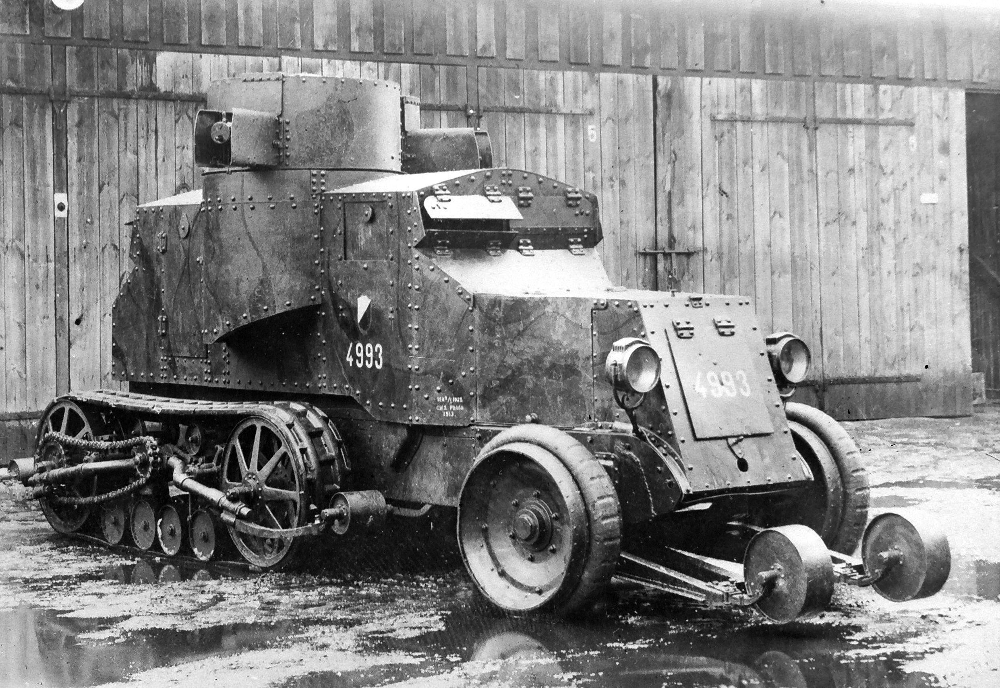
«Остин-Путиловец-Кегресс»
В России же случилась Великая Октябрьская социалистическая революция, надолго остановившая развитие вездеходостроения. Только в 1936 году идею создания дальнего экспедиционного вездехода предложил профессор Военно-воздушной инженерной академии имени Н.Е. Жуковского Георгий Покровский. Он указал основные области применения больших вездеходов: грузоперевозки, исследовательские и спасательные операции – вне зависимости от погоды, состояния льдов и грунта. В числе конструктивных особенностей, предсказанных Покровским: передвижение в воде за счет перемотки гусениц с развитыми грунтозацепами, большая ширина гусениц, обеспечивающая низкое давление на грунт, дизель в качестве главного двигателя. В конце 1930-х годов инженеры-конструкторы попытались создать такие машины, но главным для страны в этот момент уже стали танки, тракторы и артиллерийские тягачи. Они же преобладали в продукции заводов 1940-х годов. У советского государства долгое время не было потребности создавать гражданскую машину для преодоления больших пространств бездорожья. Справлялись тракторами.
Часть 2
Государственная задача
Все изменилось в 1947 году, когда началось строительство трансполярной магистрали Воркута-Салехард-Игарка, которая, кстати, должна была пройти и по территории современного города Новый Уренгой. Нужна была гусеничная машина, способная преодолевать любые препятствия и плавать. Тракторы и артиллерийские тягачи плавать не умели. Стали искать прототип и вспомнили, что в годы Великой Отечественной войны в нашу страну по ленд-лизу прибыли из Канады лёгкие тягачи-вездеходы Armoured Snowmobile Mk.I производства компании Bombardier.
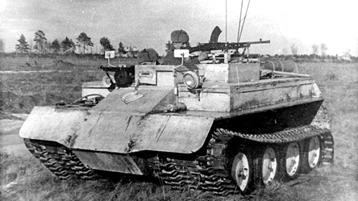
Машину изучили, и в том же 1947 году на московском заводе имени Сталина (впоследствии –ЗиЛ) очень быстро построили советские аналоги. Последний из них – ГПИ-С-22 – отвечал всем требованиям заказчиков.Его разработали и построили в единственном экземпляре инженеры Горьковского политехнического института под руководством известного конструктора М.В. Веселовского.
Машина была неплоха, но поскольку Веселовский не располагал производственной базой для отработки технологического цикла, руководство СССР доверило создание новой машины инженерам Горьковского автомобильного завода. Конструктором нового вездехода, который получил официальное название ГТ-С (гусеничный транспортёр-снегоболотоход), назначили Сергея Борисовича Михайлова. Он внимательно изучил проектную документацию Веселовскогои внёс в неё ряд изменений, добившись, в конечном счете, уменьшения веса и высоты машины. На заводе вездеход получил название ГАЗ-47.
Часть 3
ГТ-С (ГАЗ-47)
Вес машины с топливом и без пассажиров составлял 3,65 тонны. Вместимость грузовой платформы была рассчитана на 1 тонну. Максимальная скорость вездехода составляла 35-38 км/ч. Расход горючего варьировался от 45 до 150 литров на 100 км в зависимости от сложности рельефа.
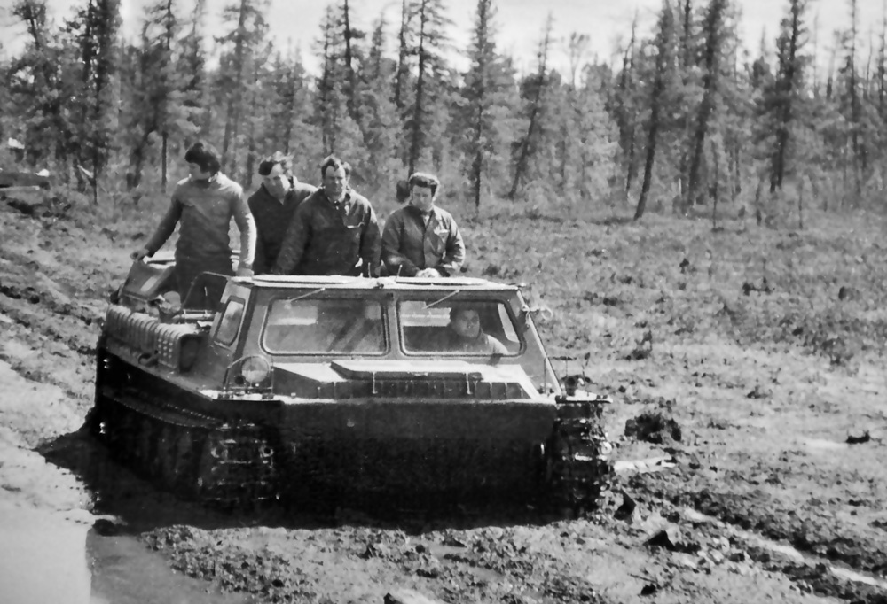
Государственные испытания прошли в 1952 году, но в серию вездеход запустили только в 1955 году. Его отличала простота, надёжность и технологичность конструкции. Многие элементы ходовой части, трансмиссии и управления ГАЗ-47 были «унаследованы» от лёгких танков. Небольшие габариты и вес вездехода допускали перевозку его по воздуху с использованием тяжёлого вертолета Ми-26 или транспортных самолётов. Мощности вездехода было достаточно для того, чтобы перевозить не только основной груз, но и прицеп. И главное. ГАЗ-47 был способен неплохо плавать. Этот гусеничный транспортёр стал на долгие годы незаменимым помощником исследователей и военных, побывал на обоих полюсах Земли. Его выпуск продолжался до 1964 года.
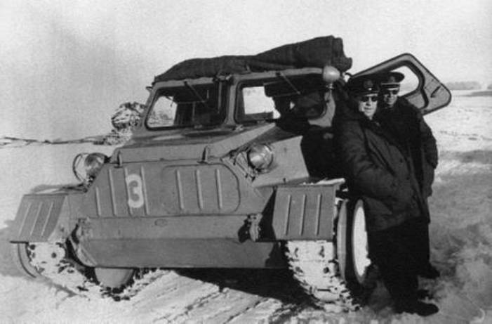
Часть 4
ГТ-СМ (ГАЗ-71)
1960-е годы для Советского Союза стали эпохой освоения Крайнего Севера и просторов Сибири, где дорог не было, а были только направления. Нужен был новый мощный вездеход с улучшенными ходовыми и амфибийными качествами. В 1965 году на Горьковском автомобильном заводе собрали первый прототип нового гусеничного транспортёра. Ведущий конструктор машины Владимир Петрович Рогожин осуществил полную перекомпоновку прежнего вездехода. Он сместил двигатель в середину машины между кабиной и десантным отделением и развернул его в обратную сторону. Места при этом для мотора стало больше. Это позволило заменить двигатель от ГАЗ-51 более мощным и тяжёлым V-образным восьмицилиндровым ГАЗ-53, а через несколько лет – двигателем ГАЗ-66 мощностью 115 лошадиных сил. За счет смещения тяжелого двигателя в центр машина стала более сбалансированной и уже не так «клевала» носом при преодолении преград. Одновременно она стала ниже и длиннее.
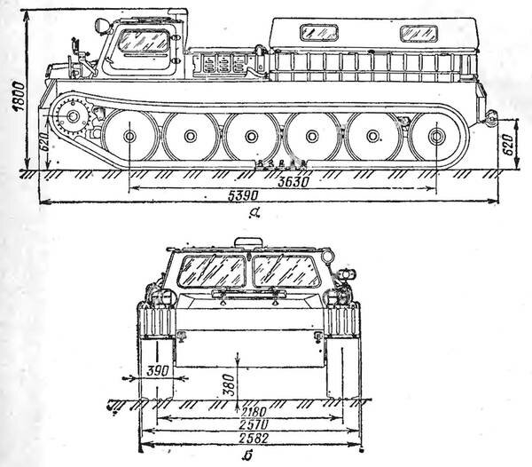
Испытания гусеничного транспортёра проходили в снегах Кольского полуострова, в болотах Архангельской области и в песках Средней Азии. При движении по дорогам вездеход показывал отличную манёвренность, развивал хорошую для своей массы и мощности скорость – до 50 км/ч. По болотистой местности и снегу машина разгонялась до 18 км/ч. При этом потребление бензина (А-76 или АИ-93) у новой машины осталось на уровне ГАЗ-47. Его среднее значение составляло 100 литров на 100 км. Вездеход имел 4 бака: три по 232,5 литра каждый и один на 77,5 литров. Всего на 311 литров. Этого хватало на преодоление 400-500 километров без дозаправок. Препятствия ГАЗ-71 преодолевал замечательно.
Машина взбиралась в гору под углом до 35 градусов и выдерживала боковой крен до 25 градусов на сухих почвах. Особенностью конструкции мотора являлась установка штатного подогревателя П-16, работающего на бензине. Подогреватель обеспечивает прогрев охлаждающей жидкости и масла в картере для запуска при низких температурах окружающей среды.
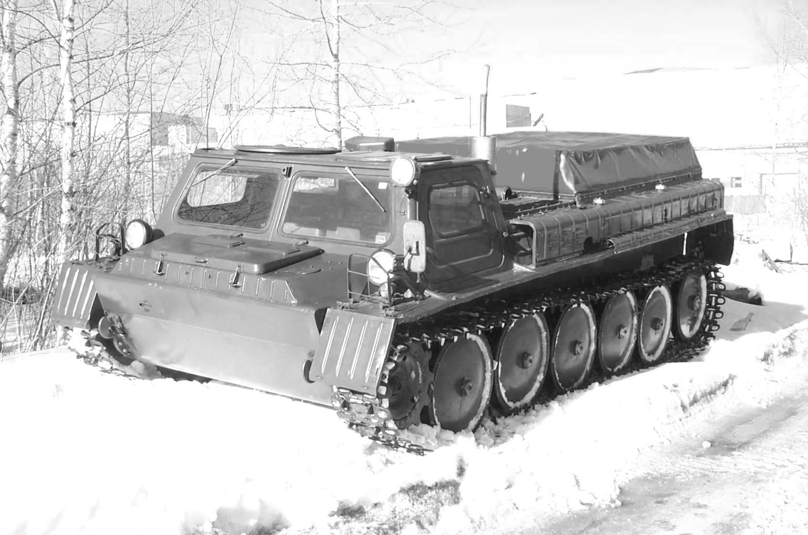
В серийное производство «гусеничный транспортёр снегоболотоход модернизированный» то есть ГТ-СМ отправился в 1968 году в Горьком, но из-за загруженности завода выпуск перенесли в Заволжск на специализированный завод гусеничных тягачей. Сборка транспортёра в Заволжске продолжалась до 1985 года. В гражданской модификации он значился, как ГАЗ-71. В народе же транспортёр вскоре получил массу прозвищ – «Грубая Тупая Сила», «Газушка» или «Жужик».
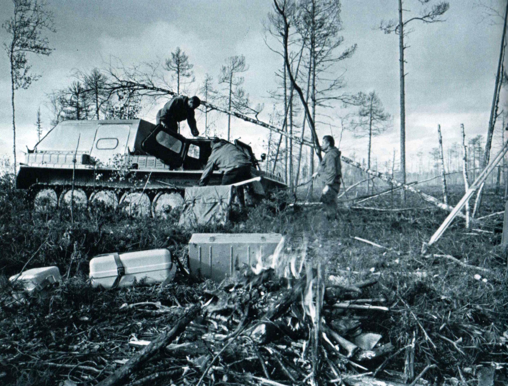
ГАЗ-71 имел десятки модификаций, связанных с его специализацией. В 1985 году начался выпуск модернизированного ГАЗ-71, он получил новый индекс ГАЗ-3403. Основному изменению подверглась ходовая часть. Новая резинометаллическая гусеница стала менее шумной и имела ресурс 12 тысяч километров, вместо 5 тысяч у старой модели. Модернизировали торсионную подвеску катков. Увеличили максимальную скорость до 60 км/ч и запас хода до 600 км. Также на 25% возросла грузоподъёмность. 17 февраля 1986 года начался выпуск модели ГАЗ-340341.
И сегодня модификации ГАЗ-71 можно встретить не только на пьедесталах. Тысячи машин трудятся на просторах Крайнего Севера.
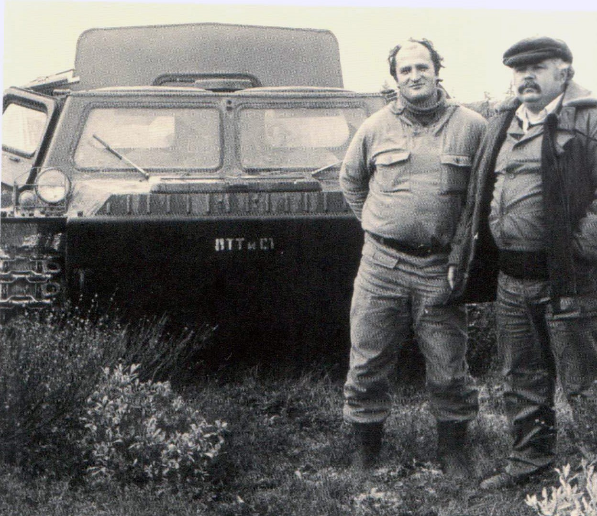
Часть 5
«Газушка» в Новом Уренгое
С декабря 1973 года, с основания посёлка Ягельный, по зимнику из Надыма сюда шли грузовые машины и гусеничные транспортёры. Они везли грузы и людей. Летом же вездеходы были единственным наземным транспортом, который соединял покорителей Уренгойского месторождения с миром. На всём протяжении последующей истории посёлка, а с 1980 года города Новый Уренгой, ГТС-71 был таким же обыденным явлением городского пейзажа, как сегодня иномарки.
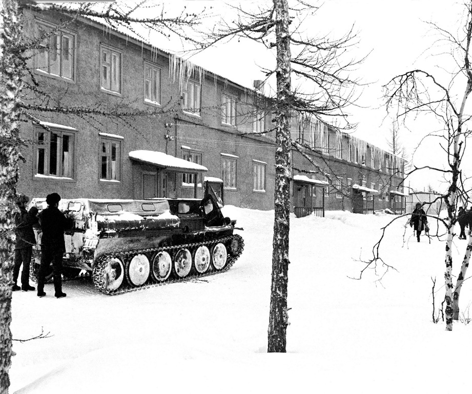
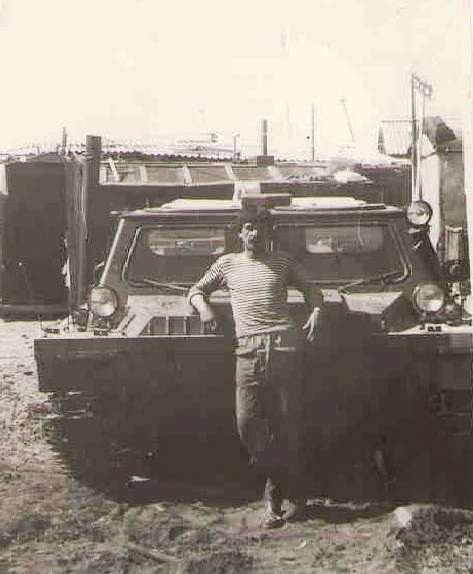
«Газушка» была верной «лошадкой» геофизиков, геодезистов, геологов, буровиков, газовиков, строителей трубопроводов и представителей многих других профессий, занимавшихся освоением тундры. Об этом нам говорят старые фотографии разных лет.
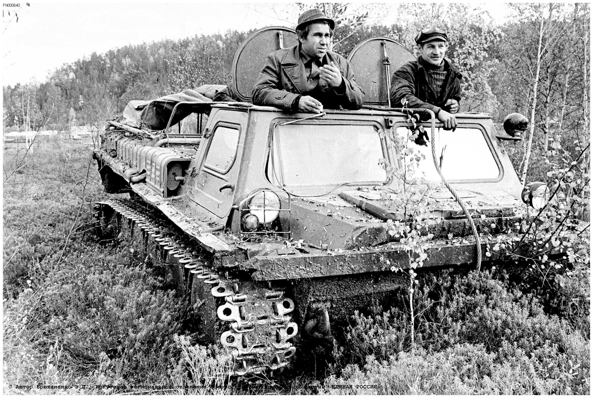
Как же устроен корпус легендарного вездехода? Он стальной. Сварен из листов различной толщины. Герметичен, что позволяет машине преодолевать водные преграды без специальной подготовки. Разделён на три отделения: кабина, моторный отсек, грузовая платформа. В кабину можно попасть через распашные боковые двери или через два люка в крыше.
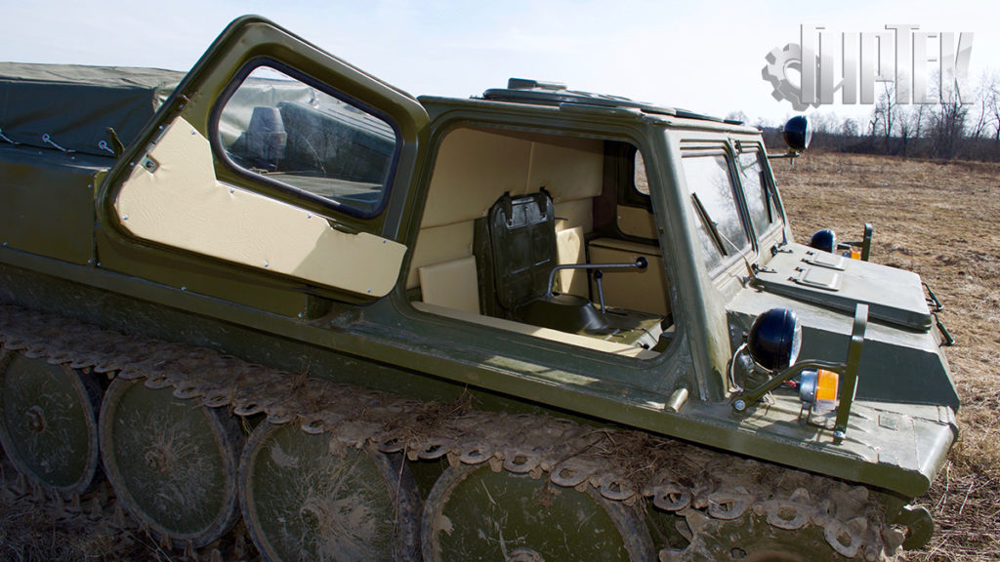
Моторный отсек отделён от кабины и грузовой части транспортёра стальными переборками. В моторном отсеке установлена помпа производительностью 80 литров в минуту, предназначенная для откачивания попадающей при преодолении водных преград жидкости. Грузовая платформа выполнена непосредственно в корпусе транспортёра. Для облегчения разгрузки и погрузки верхняя часть заднего борта откидная.
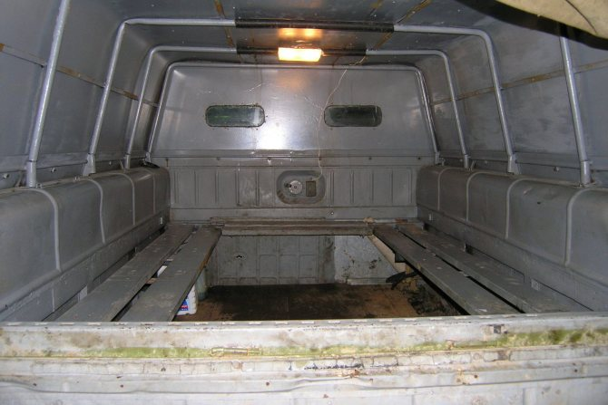
По бокам внутри платформы имеются откидные полумягкие сидения. Для обогрева внутреннего объёма грузового отсека применяется отдельный обогреватель жидкостного типа. Управляется снегоболотоход рычагами. Руля на машине нет. Рычаги находятся перед водительским сиденьем. Для поворота направо нужно потянуть на себя правый рычаг, для поворота влево – левый. Торможение обеспечивается кнопками, расположенными в верхней части рычагов.
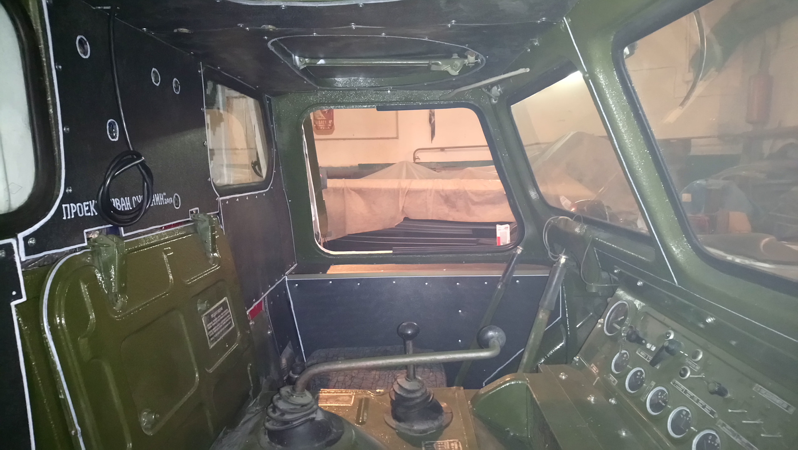
За почти 20-летнию историю своего производства (1968-1985 годы) ГАЗ-71 превратился в настоящую легенду и даже вошёл в жизнь коренного населения Крайнего Севера.
{kind=link}